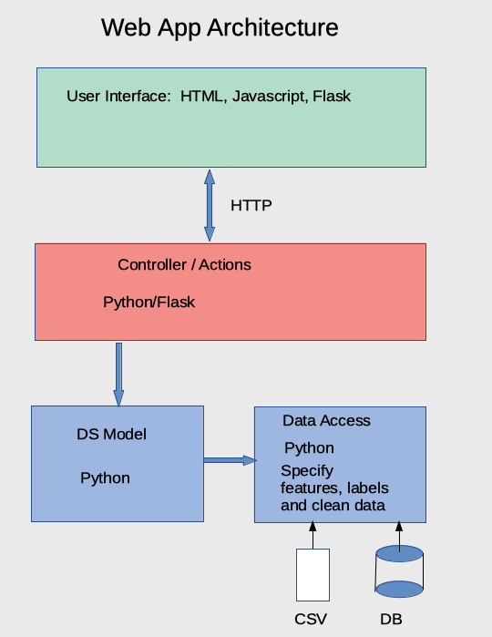
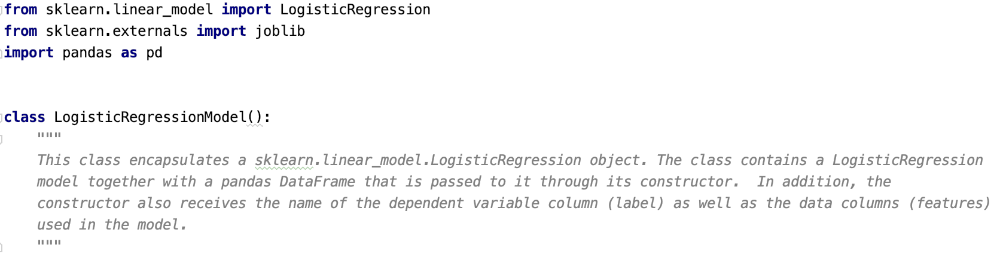
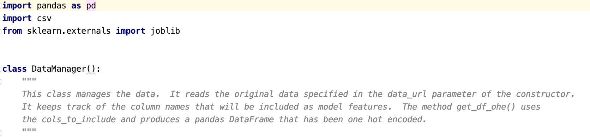

Web Application Using Flask Framework
This project demonstrates how a Data Science module written in Python can be placed into a web application context with a usable User Interface (UI). The main point of the project is a proof of concept that a Data Scientist can build a model ( In this case a machine learning model) using Python without having to worry about the web application context in which it is used. Furthermore it is shown that when written properly, a model can be used within any web application context, that is, the model is completely independent from the web framework in which it is used. This means that the Python model can function not just in the Flask framework, but can also be used directly in Django, or front ends built with AngularJS, Dash, etc.
 Before getting into details of the web application, let’s look at the overall architecture that we will be using.
The figure on the right depicts how the demo web application is built. There are four components or modules that make up the application. The two blue modules represent the code that the Data Scientist would write. The red and green modules would be written by a specialist in UI design with a knowledge of the web framework that is being used.
Let’s look at the blue modules first. The module with the label “Data Access” represents the Python code that would allow for the following:
Read the data from either a CSV or Database source
Specify the features and labels in the training data
Clean the data by handling missing values and type mismatches
Use One Hot Encoding to handle columns that contain non-numeric values
The module labeled “DS Model” allows for the following:
Building the model
Training the model with the training data.
Predict label values based on user supplied data
If we were to inspect the code of these two modules, we would find that there are no dependencies other than Python libraries. In fact, here is a code snippet of the DS Model:

Notice that the imports at the top of the snippet only include Python libraries. There is no inclusion of Flask (The web framework library), nor are there inclusions of any other libraries. In software engineering terms, we say that the DS Model module is completely decoupled from the other modules in the application. That is, we can say that the DS Model has no other dependencies other than Python libraries. The decoupled property of the DS Model module means that this module can be used in any context without worry that it would not have available its supporting libraries.
Let’s look at a code snippet from the Data Access module:

Again, no dependencies other than Python libraries. Then we can also declare that the Data Access module is decoupled from the other modules in the application.
The concept of decoupling is great for software design, but more importantly, it is also important for the Data Scientist.
Decoupling means that the Data Scientist can write the DS model and Access modules without having to worry about the context in which they are used. That is, the Data Scientist can just continue to write her/his code as before with only minor adjustments.